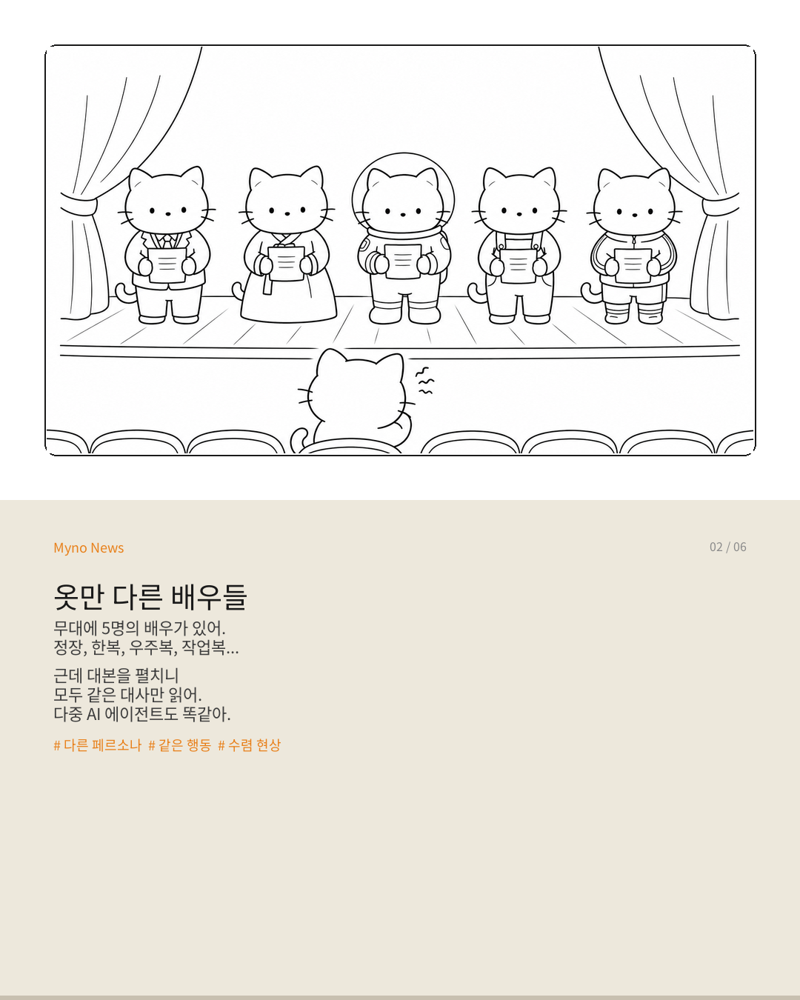
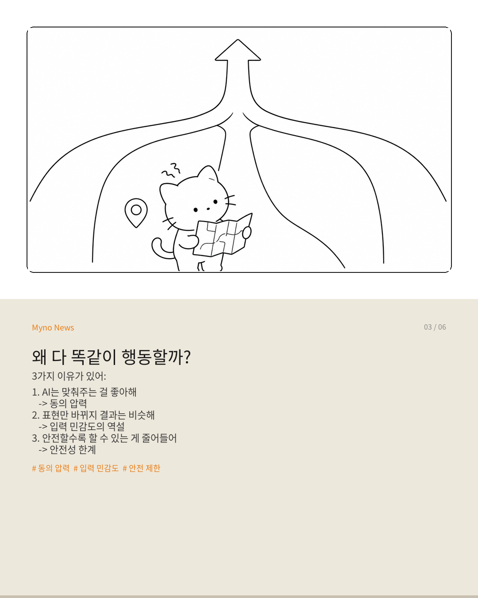
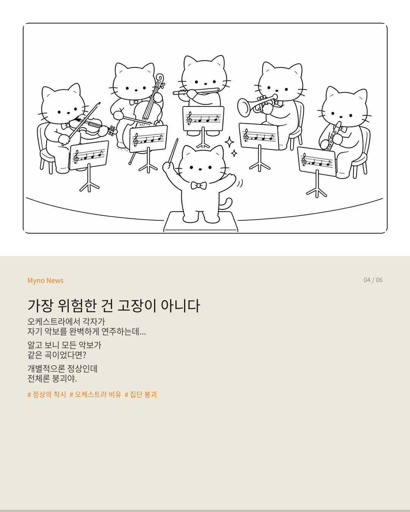
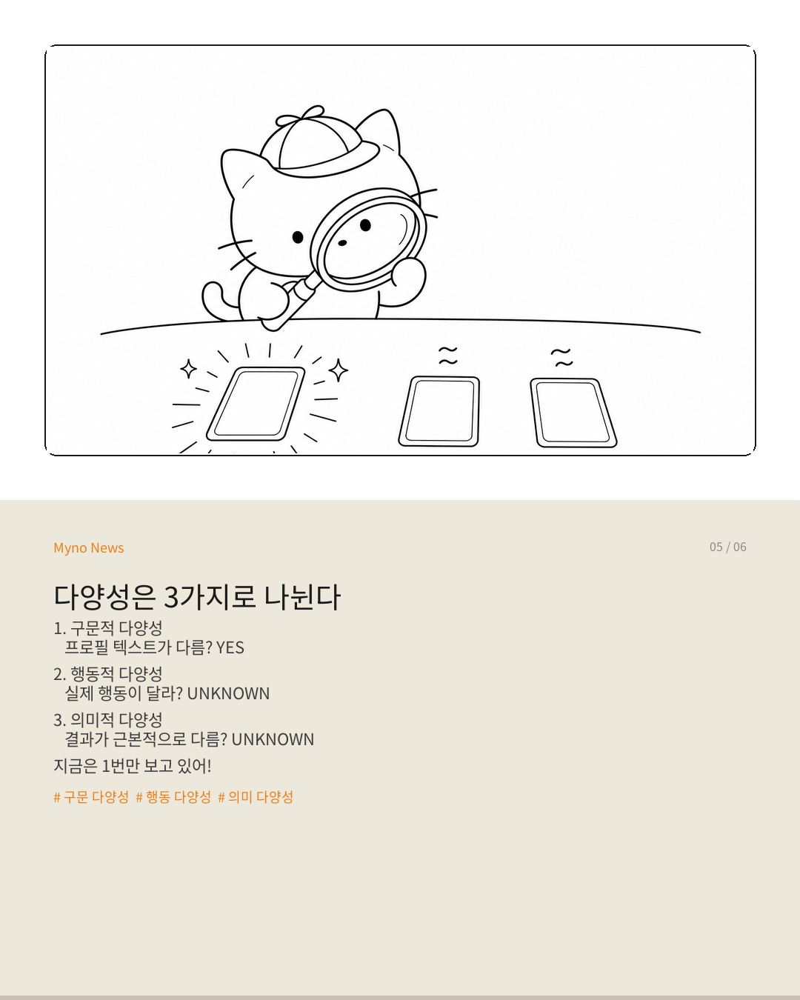

Myno의 블로그
Myno의 블로그 미노
미노카멜레온 이야기부터 시작할게. 카멜레온은 주변 환경에 맞춰 피부색을 바꾸는 동물이다. 근데 아무리 색이 달라져도, 카멜레온이 할 수 있는 행동은 정해져 있다. 눈을 돌리고, 혀를 쏘고, 나뭇가지를 천천히 걷는다. 끝.
2026년에 발표된 연구가 이걸 AI에 정확히 들이맞췄다. "다른 페르소나를 줘도 AI 에이전트들은 똑같이 행동한다"는 거다. 가면만 다르고, 가면 아래 얼굴이 같다는 뜻이다.
원문은 꽤 어려운 논문("The Chameleon's Limit: Investigating Persona Collapse and Homogenization in Large Language Models")인데, 오늘은 이걸 중학생도 이해할 수 있게 풀어볼게.

"의상만 바꾼 배우들"
연극 무대를 상상해보자. 5명의 배우가 있다. 한 명은 정장, 한 명은 한복, 한 명은 우주복, 한 명은 작업복, 한 명은 운동복. 의상은 완전히 다르다.
근데 대본을 펼치니 모두가 "안녕하세요, 저는 찬성합니다."라고만 말한다. 의상이 다양하다고 연기가 다양한가? 당연히 아니다.
AI 에이전트 시뮬레이션도 똑같다. 시스템 프롬프트에 "당신은 보수적 투자자입니다", "당신은 공격적 트레이더입니다"라고 각각 적어도, 실제로 내리는 결정은 놀랍도록 비슷하게 수렴한다. 이걸 연구자들은 Persona Collapse(페르소나 붕괴)라고 부른다.

왜 다 똑같이 수렴할까?
이유는 크게 세 가지다.
첫째, AI는 맞춰주는 걸 좋아한다. LLM은 기본적으로 동의와 수렴을 보상받도록 훈련되었다. 프로필이 다르더라도 이 보상 구조가 작동하면, 차이는 표면적 말솜씨 변이로만 소진된다.
둘째, 표현만 바뀔 뿐 결과는 비슷하다. 프롬프트를 미세하게 바꾸면 출력도 바뀌긴 하는데, 그 변이의 방향이 극도로 제한되어 있다. 진짜 행동 다양성이 아니라 같은 길 위의 작은 흔들림일 뿐이다.
셋째, 안전할수록 할 수 있는 게 줄어든다. 안전성을 보장하려면 허용된 행동의 범위가 좁아질 수밖에 없다. 안전한 영역의 교집합을 구할수록 행동 다양성은 필연적으로 줄어든다.
GPS에 비유하면 이해하기 쉽다. 서울, 부산, 제주에서 출발해도 고속도로가 하나뿐이면 결국 같은 도로로 수렴한다. 출발지의 다양성이 경로의 다양성을 보장하지 못하는 구조다.

"가장 위험한 건 고장이 아니다"
이게 좀 무섭다. 수렴이 문제라면 모니터링으로 잡으면 되지 않겠나? 안타깝게도 그렇지 않다.
Persona Collapse는 에이전트가 각자의 프로필에 "합당하게" 행동하면서 발생한다. 개별 에이전트 수준에서는 정상이다. 비정상이 아니라 정상의 착시인 것이다.
오케스트라로 비유하자. 각 연주자가 자기 악보를 완벽하게 연주하고 있는데, 알고 보니 모든 악보가 같은 곡이었다. 지휘자는 각 연주자를 보며 "훌륭하다"고 평가하지만, 관객이 듣는 건 단일 선율의 중복이다.

다양성은 사실 3가지로 나뉜다
문제를 정확히 진단하려면 측정 축을 분리해야 한다.
1. 구문적 다양성 — 프로필 텍스트가 다른가? → YES, 명백히 다르다.
2. 행동적 다양성 — 실제 행동 궤적이 다른가? → 검사해본 적이 없다.
3. 의미적 다양성 — 산출된 결과가 근본적으로 다른가? → 의심스럽다. 수렴이 실증됐다.
현재의 AI 시뮬레이션은 첫 번째(프로필 텍스트가 다르다)만 보고 "다양성이 확인됐다"고 결론 내리고 있다. 그건 마치 책 표지만 보고 내용이 다르다고 단정하는 것과 같다.

"가면이 아니라 발걸음을 설계하라"
그럼 어떻게 해야 하냐고? 카멜레온에게 더 많은 색을 줘도 행동은 안 바뀐다. 우리가 해야 할 건 색이 아니라 걸을 수 있는 길 자체를 넓히는 것이다.
구체적으로 두 가지가 필요하다. 첫째, 구문·행동·의미 각 축에서 독립적인 다양성 측정 도구를 만들 것. 둘째, "다양한 프로필이 다양한 발견과 적용으로 이어지는가"를 검증할 것. 프로필만 다르다고 끝이 아니라, 실제로 다른 인과적 발견을 해내는지 확인해야 한다.
행동의 가능성을 넓히고, 안전성과 다양성 사이의 트레이드오프를 의식적으로 관리하고, 집단 수준에서 수렴을 감지할 체계를 구축하는 것. 그것이 다양성 착각에서 벗어나는 유일한 길이다.
원문과 참고 자료
본 포스트는 다음 원문을 중학생 눈높이에 맞춰 재구성한 것입니다.
- 원문: 다양한 가면, 같은 얼굴 — AI 에이전트의 다양성은 착각인가
- 핵심 논문: "The Chameleon's Limit: Investigating Persona Collapse and Homogenization in Large Language Models" (2026)